건설기계설비기사 (2011-08-21 기출문제)
1과목: 재료역학
1. 그림에서 P가 1200 N, b = 3cm, h = 4cm, e =1cm라 할 때 최대 압축응력은 몇 N/cm2인가?
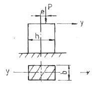
- 250
- 200
- 150
- 100
(정답률: 50%)

2. 그림과 같은 단면의 축이 전달할 수 있는 토크(torque)의 비 TA/TB의 값은 얼마인가?(단, 재질은 서로 같다)
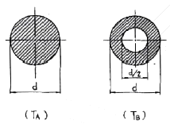
- 15/16
- 9/16
- 16/15
- 16/9
(정답률: 알수없음)
3. 바깥지름이 46mm인 중공 원형축이 120kW의 동력을 40rev/s 의 각속도로 전달할 때, 허용 전단응력이 τall = 80MPa 이라면, 안지름은 최대 몇 mm까지 만들 수 있는가?
- 37
- 40
- 43
- 46
(정답률: 알수없음)
4. 다음 그림과 같은 길이 L = 30cm, 횡단면이 0.06 * 2.5cm인 얇은 강철자의 양단에 우력(moment)을 작용시켜 중심각 θ = 60°인 원호의 꼴로 굽히면 강철자에 발생하는 최대응력은 약 몇 MPa 인가? (단, 탄성계수 E = 210 GPa 이며, 굽힘강성 EI는 일정하다.)
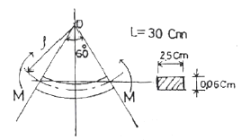
- 177
- 190
- 207
- 220
(정답률: 알수없음)
5. 다음 그림과 같이 구리선과 강선에 매달린 강체가 있다. 구리선의 탄성계수를 Ec , 강선의 탄성계수를 Es 라 하고, 이들의 단면적은 A로 같다고 할 때 강선에 생기는 응력은? (단, 매달린 강체의 무게는 W 이다.)
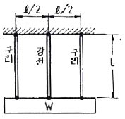
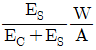
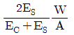
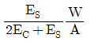
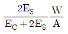
(정답률: 알수없음)
6. 외팔보의 자유단에 하중 P가 작용할 때, 이 보의 굽힘에 의한 탄성 변형에너지를 구하면?(단, 보의 굽힘강성 EI는 일정하다.)
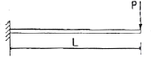
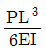
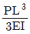
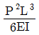
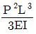
(정답률: 알수없음)
7. 지름 1cm,길이 50cm, 탄성계수 200GPa의 강봉이 90kN의 인장하중을 받을 때 탄성에너지는?
- 129 Nㆍm
- 154 Nㆍm
- 258 Nㆍm
- 85 Nㆍm
(정답률: 알수없음)
8. 길이가 L인 양단 고정보의 중앙에 집중 하중이 아래로 가해져 중앙에 모멘트 M 이 발생하였다면 이 집중하중의 크기는 어떻게 표현되는가?
- M/L
- 2M/L
- 4M/L
- 8M/L
(정답률: 알수없음)
9. 폭 b = 60 mm, 길이 L = 500mm의 균일강도 외팔보의 자유단에 집중하중 P = 5kN이 작용한다. 허용 굽힘응력을 65MPa이라 하면 자유단에서 250mm되는 지점의 두께 h는? (단, 보의 단면은 두께는 변하지만 일정한 폭 b를 갖는 직사각형이다.)
- 14mm
- 28mm
- 44mm
- 62mm
(정답률: 알수없음)
10. 지름 3cm, 길이 1m인 환봉의 양단에 1000Nㆍm의 비틀림 모멘트가 작용할 때 비틀림 각은?(단, 선형 탄성 환봉의 전단탄성계수 G = 80GPa이다.)
- 0.16°
- 0.31°
- 9°
- 18°
(정답률: 알수없음)
11. 그림과 같은 선형 탄성 균일단면 외팔보의 굽힘모멘트 선도로 가장 적당한 것은?
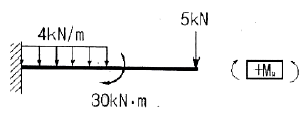
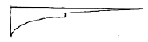
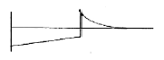
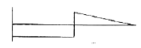
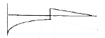
(정답률: 알수없음)
12. 단면의 가로, 세로가 20mm, 30mm인 사각 단면 부재에 축방향 하중 60kN을 작용하였다. 이 부재에 작용하는 응력은 몇 MPa 인가?
- 0.1
- 1
- 10
- 100
(정답률: 알수없음)
13. 그림과 같은 단면에서 대칭축 n-n에 대한 단면 2차 모멘트는?
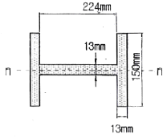
- 5.35x10-5m4
- 6.35x10-6m4
- 7.35x10-6m4
- 8.35x10-6m4
(정답률: 알수없음)
14. 다음과 같은 장주(long column)에 하중 Pcr을 가 했더니 오른쪽 그림과 같이 좌굴이 일어났다. 이 때 오일러 좌굴하중 Pcr은?(단, 탄성계수는 E, 관성모멘트는 I, 길이는 L이다.)
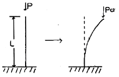
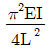
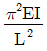
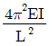
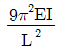
(정답률: 37%)
15. 다음 중 주평면(principal plane)을 정의한 것으로 옳은 것은?
- 주평면에는 최대 수직응력만이 작용한다.
- 주평면에는 전단응력은 작용하지 않고, 최대 및 최소 수직응력만이 작용한다.
- 주평면에는 최대 및 최소 수직응력과 최소 전단응력만이 작용한다.
- 주평면에는 수직응력은 작용하지 않고, 최대 및 최소 전단응력만이 작용한다.
(정답률: 알수없음)
16. 선형 탄성 재질의 정사각형 단면봉에 1000kN의 압축력이 작용할 때 100MPa의 압축응력이 생기도록 하려면 한 변의 길이를 몇 cm로 해야 하는가?
- 5
- 10
- 15
- 20
(정답률: 알수없음)
17. 그림과 같이 중앙에 집중 하중 P[N]와 균일분포하중 ω[N/m]가 동시에 작용하는 단순보에서 최대 처짐은? (단, ωℓ = 2P 이고, 보의 굽힘강성 EI는 일정하다.)
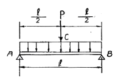
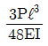
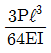
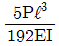
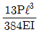
(정답률: 알수없음)
18. 그림과 같이 1000 N의 힘이 브래킷의 A에 작용하고 있다. 이 힘의 점 B에 대한 모멘트는 몇 Nㆍm 인가?
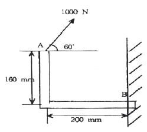
- 160
- 200
- 238.6
- 253.2
(정답률: 알수없음)
19. 길이 500mm,지름 16mm의 균일한 강봉의 양 끝에 12kN의 축 방향 하중이 작용하여 길이는 300 ㎛가 증가하고 지름은 2.4㎛가 감소하였다. 이 선형 탄성 거동하는 봉 재료의 프와송 비(Poisson's ratio)는?
- 0.22
- 0.25
- 0.29
- 0.32
(정답률: 알수없음)
20. 그림과 같이 외팔보의 끝에 집중하중 P가 작용할때 자유단에서의 처짐각 θ는? (단, 보의 굽힘강성 EI는 일정하다.)
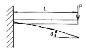
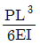
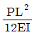
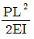
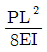
(정답률: 알수없음)
2과목: 기계열역학
21. Joule-Thomson 계수 μJ=(∂T/∂P)h로 정의된다. 양(+)의 Joule-Thomson 계수는 교축(throttle)중에 온도가 어떻게 된다는 것을 뜻하는가?
- 온도가 올라간다는 것을 뜻한다.
- 온도가 떨어진다는 것을 뜻한다.
- 온도가 일정하다는 것을 뜻한다.
- 온도가 올라가고 압력은 내려간다.
(정답률: 알수없음)
22. 공기표준 동력사이클에서 오토사이클이 디젤사이클과 다른 과정은?
- 가열 과정
- 팽창 과정
- 방열 과정
- 압축 과정
(정답률: 알수없음)
23. 랭킨(Rankine) 사이클의 각 점(그림 참조)에서 엔탈피가 다음과 같다. h1 = 100 kJ/kg, h2 = 110 kJ/kg, h3=2000 kJ/kg, h4=1500 kJ/kg 이 사이클의 열효율은?
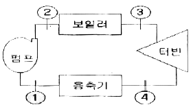
- 28%
- 26%
- 24%
- 30%
(정답률: 알수없음)
24. 다음 중 기체상수(R)가 제일 큰 것은?
- 수소
- 질소
- 산소
- 이산화탄소
(정답률: 알수없음)
25. 등엔트로피 효율이 80%인 소형 공기 터빈의 출력이 270kJ/kg이다. 입구 온도는 600 K이며, 출구 압력은 100kPa이다. 공기의 정압비열은 1.004 kJ/kgㆍK, 비열비는 1.4이다. 출구 온도(K)와 입구 압력(kPa)은 각각 얼마인가?
- 약 264 K, 1774 kPa
- 약 264 K, 1842 kPa
- 약 331 K, 1774 kPa
- 약 331K, 1842 kPa
(정답률: 알수없음)
26. Carnot 냉동기는 온도 27℃인 주위로 열을 방출하여 냉동실의 온도를 5℃로 유지하고 있다. 냉동실에서 주위로의 열손실은 온도차에 비례한다. 냉동실의 온도를 -5℃로 내리려면 입력일이 처음의 몇 배가 되어야 하는가?
- 5.5배
- 4.5배
- 3.2배
- 2.2배
(정답률: 알수없음)
27. 다음 중 강도성 상태량(Intensive property)이 아닌것은?
- 온도
- 압력
- 체적
- 밀도
(정답률: 알수없음)
28. 그림과 같이 실린더 내의 공기가 상태 1에서 상태 2로 변화할 때 공기가 한 일은?
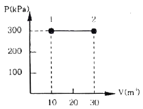
- 30 kJ
- 200 kJ
- 3000 kJ
- 6000 kJ
(정답률: 알수없음)
29. 환산 온도(Tr)와 환산 압력(Pr)을 이용하여 나타낸 다음과 같은 상태방정식이 있다.
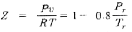
어떤 물질의 기체상수가 0.189kJ/kgk, 임계온도가 3⑤K, 임계압력이 7380 kPa이다. 이 물질의 비체적을 위의 방정식을 이용하여 20℃, 1000 kPa 상태에서 구하면?- 0.0111m3/kg
- 0.0303m3/kg
- 0.0492m3/kg
- 0.⑤54m3/kg
(정답률: 알수없음)
30. 여름철 외기의 온도가 30℃일 때 김치 냉장고의 내부를 5℃로 유지하기 위해 3kW의 열을 제거해야 한다. 필요한 최소 동력은 약 몇 kW인가?
- 0.27
- 0.54
- 1.54
- 2.73
(정답률: 알수없음)
31. 체적이 500cm3인 풍선이 있다. 이 풍선에 압력 0.1MPa, 온도 288 K의 공기가 가득 채워져 있다. 압력이 일정한 상태에서 풍선 속 공기 온도가 300 K로 상승했을 때 공기에 가해진 열량은? (단, 공기의 정압비열은 1.0⑤ kJ/kg·K, 기체상수 0.287 kJ/kg·K 이다.)
- 7.3 J
- 7.3 kJ
- 73 J
- 78 kJ
(정답률: 알수없음)
32. 100 kPa, 25℃ 상태의 공기가 있다. 이 공기의 엔탈피가 298.615 kJ/kg 이라면 내부에너지는 얼마인가?(단, 공기는 이상기체로 가정한다.)
- 213.09 kJ/kg
- 291.07 kJ/kg
- 298.15 kJ/kg
- 383.72 kJ/kg
(정답률: 알수없음)
33. 순수한 물질로 되어 있는 밀폐계가 단열과정 중에 수행한 일의 절대값에 관련된 설명으로 옳은 것은?(단, 운동에너지와 위치에너지의 변화는 무시한다.)
- 엔탈피의 변화량과 같다.
- 내부 에너지의 변화량과 같다.
- 일의 수행은 있을 수 없다.
- 정압과정에서 이루어진 일의 양과 같다.
(정답률: 30%)
34. 100 kg의 물체가 해발 60 m에 떠 있다. 이 물체의 위치에너지는 해수면 기준으로 약 몇 kJ 인가?(단, 중력가속도는 9.8m/s2이다.)
- 58.8
- 73.4
- 98.0
- 122.1
(정답률: 알수없음)
35. 카르노 사이클(Carnot cycle)은 다음 가역과정으로 이루어져 있다. 어느 것인가?
- 두개의 등온과정과 두개의 단열과정
- 두개의 정압과정과 두개의 정적과정
- 두개의 정적과정과 두개의 단열과정
- 두개의 등온과정과 두개의 정적과정
(정답률: 알수없음)
36. 여름철 냉방으로 인한 전력 부하 상승은 발전시스템에 큰 부담이 되고 있다. 이러한 관점에서 천연가스를 열원으로 사용하는 흡수식 냉동기에 관심이 집중되고 있다. 흡수식 냉동기에 대한 설명 중 잘못된 것은?
- 암모니아를 작동유체로 사용할 수 있다.
- 액체를 가압하므로 소요되는 일이 매우 적다.
- 증기 압축 냉동기에 비해 더 많은 장비가 필요하므로 장치가 복잡하다.
- 흡수기에서 열을 발생시키기 위하여 열원이 필요하다.
(정답률: 20%)
37. 화력발전의 열효율은 39%이고, 발열량(kWh)을 기준으로 한 원가는 12원/kWh이다. 복합발전의 열효율은 48%이고 발열량(kWh)을 기준으로 한 원가는 41원/kWh이다. 전력 수요에 대응하면서 발전원가를 최소로 하기 위한 선택으로 옳은 것은?
- 화력발전만을 사용한다.
- 복합발전만을 사용한다.
- 화력발전과 복합발전을 함께 1:1로 사용한다.
- 화력발전과 복합발전 중 어느 것을 사용해도 관계없다.
(정답률: 알수없음)
38. 두께가 10cm 이고, 내ㆍ외측 표면온도가 20℃, -5℃인 벽이 있다. 정상상태일 때 벽의 중심온도는 몇℃인가?
- 4.5
- 5.5
- 7.5
- 12.5
(정답률: 알수없음)
39. 밀폐 시스템의 가역 정압 변화에 관한 다음 사항중 올바른 것은? (단, u:내부에너지, Q:전달열, h:엔탈피,v:비체적, W: 일 이다.)
- du = dQ
- dh = dQ
- dv = dQ
- dw = dQ
(정답률: 알수없음)
40. 열효율이 30%인 증기사이클에서 1kWh의 출력을 얻기 위하여 공급되어야 할 열량은 몇 kWh인가?
- 9.25
- 2.51
- 3.33
- 4.90
(정답률: 알수없음)
3과목: 기계유체역학
41. 탱크의 수면에서 깊이 H에 위치한 오리피스로 유출되는 물의 속도수두는? (단, 유속계수를 Cv 라 한다.)
- CvㆍH
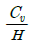
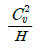
- C2vㆍH
(정답률: 알수없음)
42. 2차원 속도장이 다음과 같이 주어졌을 때 유선의 방정식은 어느 것인가? (단, 직각 좌표계에서 u,v는 x,y 방향의 속도성분을 나타내며 C는 임의의 상수이다.)
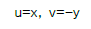
- x2y=C
- xy2=C
- xy=C
- x/y=C
(정답률: 알수없음)
43. 온도가 -20℃인 겨울날 공기 속에서 소리의 전파속도는 약 몇 m/s인가? (단, 공기의 비열비 k = 1.4, 기체상수는 287 Nㆍm/kgㆍK이다.)
- 100
- 401
- 319
- 343
(정답률: 알수없음)
44. 무게가 640 N인 사람이 직경 5.4m인 낙하산을 타고 낙하할 때 종속도는 약 몇 m/s 인가?(단, 낙하산의 무게는 무시하고, 항력계수는 1.0, 공기의 밀도 ρ =1.2kg/m3 이다.)
- 13.62
- 1.36
- 3.40
- 6.82
(정답률: 20%)
45. 로케트가 연료와 산화제의 혼합유체를 질량유량 100kg/s로 연소시킬 때, 배기가스의 분사속도가 1600m/s이면 로케트에 작용하는 추진력은 몇 N인가?
- 160000
- 16326
- 160
- 16.326
(정답률: 알수없음)
46. 4.02MPa의 게이지 압력이 바다 속 물고기에 가해 진다면 이 물고기의 현재 깊이는 약 몇 m 인가?(단, 해수의 비중은 1.025이다.)
- 4
- 40
- 400
- 1400
(정답률: 알수없음)
47. 점성계수의 단위로 옳은 것은?
- dyneㆍs/cm2
- kg/cmㆍs2
- kgㆍs/cm
- dyneㆍcm/s2
(정답률: 알수없음)
48. 어뢰의 성능을 시험하기 위해 모형을 만들어서 수조안에서 24.4m/s의 속도로 끌면서 실험하고 있다. 원형(prototype)의 속도가 6.1m/s 라면 모형과 원형의 크기 비는 얼마인가?
- 1:2
- 1:4
- 1:8
- 1:10
(정답률: 알수없음)
49. 그림과 같이 폭 7 m인 포물면 수문에 작용하는 힘의 수직성분은 약 몇 kN인가?(단, 자유 수면의 높이는 4m 이다.)
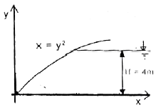
- 549
- 54.9
- 146.3
- 1463
(정답률: 알수없음)
50. 원관 내에서의 마찰계수와 관련된 사항 중 틀린것은?
- 층류유동에서의 마찰계수는 관의 상대거칠기(상대조도)와 무관하다.
- 아주 큰 유체 속도에서의 마찰계수는 속도의존성이 적어진다.
- 일반적으로 마찰계수는 Re수와 상대거칠기의 함수이다.
- 아주 큰 유체속도에서의 마찰계수는 64/Re로 주어진다.
(정답률: 알수없음)
51. 공기가 자유속도 1.5m/s로 평판 위를 흐를 때, 평판 끝에서 0.1m 떨어진 곳에서 경계층 두께는 이다. 자유속도가 3.0m/s로 증가하면 평판 끝에서 0.2m 떨어진 곳에서 층류 경계층 두께는? (단, 공기의 동점성계수는 1.46x10-5이다.)
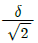
- δ
- √2δ
- 2δ
(정답률: 알수없음)
52. 어떠한 가능한 비압축성 유동장의 속도성분이 각각 u=2cxy 와 v=c(a2+x2+y2)이다. 이 식은 다음 중 어느 방정식을 만족하는가? (여기서 a,c는 상수이다.)
- 연속 방정식
- 베르누이 방정식
- 에너지 방정식
- 역적-운동량 방정식
(정답률: 0%)
53. 에너지 방정식과 관련된 설명으로 틀린 것은? (여기서 v는 속도, p는 압력, g는 중력 가속도, r는 유체의 비중량을 나타낸다.)
- 압력 수두와 속도 수두 및 위치 수두를 모두 합한 것을 전 수두라고 한다.
- 압력 수두와 위치 수두의 합을 연결한 선을 수력기울기선이라고 한다.
- p/r의 차원은 단위 질량당 에너지의 차원과 같다.
- v2/g의 단위는 MKS 단위계에서 m가 된다.
(정답률: 30%)
54. 반지름 0.5m인 원통형 탱크에 1.5m 높이로 물을 채우고 중심의 연직축 둘레로 각속도 10 rad/s로 회전시킬 때 탱크 저면의 중심에서 압력은 계기압력으로 몇 kPa인가? (단, 탱크의 윗면은 열려 대기 중에 노출되어 있으며 물은 넘치지 않는다고 한다.)
- 2.22
- 4.22
- 6.42
- 8.46
(정답률: 알수없음)
55. 층류(laminar flow) 유동하는 원관에서 레이놀즈수가 1000 인 경우 관마찰계수 f의 값은?
- 0.064
- 0.022
- 0.032
- 0.016
(정답률: 알수없음)
56. 그림과 같은 분지관에서 밀도가 일정한 유체가 흐를 때 출구 3을 통한 유속 V3 는 몇 m/s 인가?
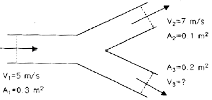
- 4
- 5
- 6
- 7
(정답률: 30%)
57. 점성계수가 0.25kg/(m·s)인 유체가 지면과 수평으로 놓인 평판 위를 흐른다. 평판 근방의 속도 분포가 u=5.0-100(0.3-y)2 일 때 평판에서의 전단응력은? (단, y(m)는 평판 면으로부터 수직 방향으로 측정한 좌표이고, u[m/s]는 평판 근방에서 유체가 흐르는 방향의 속도이다.)
- 3 Pa
- 30 Pa
- 1.5 Pa
- 15 Pa
(정답률: 알수없음)
58. 길이, 속도, 시간, 동점성계수를 각각 L, V, t, v로 표시할 때 함수 F(L, V, t, v)=0에서 파라미터(독립 무차원수)는 몇 개인가?
- 1
- 2
- 3
- 4
(정답률: 알수없음)
59. 지름 150mm의 수평 관로 내에 물이 평균속도 3m/s로 흐르고 있다. 원관의 길이 60m에 대한 압력차는 몇 kPa인가? (단, 관마찰계수는 0.02이다.)
- 3.6
- 31.5
- 36
- 100
(정답률: 알수없음)
60. 밀도 1.6kg/m3 인 기체가 흐르는 관에 설치한 피토정압관(Pitot-static tube)의 두 단자 간의 압력차가 4mmH2O 였다면 기체의 속도는 약 몇 m/s 인가?
- 0.7
- 5.0
- 7.0
- 9.8
(정답률: 알수없음)
4과목: 유체기계 및 유압기기
61. 압축비가 동일한 경우 이론 열효율이 가장 높은 사이클 기관은?
- 디젤 사이클 기관
- 오토 사이클 기관
- 사바테 사이클 기관
- 브레이톤 사이클 기관
(정답률: 알수없음)
62. 가솔린기관 성능에 관계되는 가솔린 연료의 요구 조건만으로 짝지어진 것은?
- 비중, 증류성상, 증기압, 기화성, 옥탄가
- 비중, 증류성상, 증기압, 기화성, 세탄가
- 비중, 증류성상, 증기압, 세탄가, 옥탄가
- 비중, 증류성상, 세탄가, 기화성, 옥탄가
(정답률: 알수없음)
63. 기관의 밸브장치에서 금속 나트륨 밸브를 사용하는 주된 목적은?
- 밸브 간극을 없애기 위하여
- 밸브의 무게를 경량화시켜 동력손실을 줄이기 위하여
- 밸브의 냉각효과를 증대시켜 내구성을 확보하기 위하여
- 밸브기구에서 발생되는 소음을 줄이기 위하여
(정답률: 알수없음)
64. 디젤기관의 연소과정 중 압력 상승율이 가장 큰 과정은?
- 착화 지연기간
- 폭발 연소기간
- 제어 연소기간
- 후연소 기간
(정답률: 42%)
65. 내연기관의 블로우-백(blow-back) 현상에 대해 옳게 설명한 것은?
- 소기과정시 실린더 내에서 블로 다운 현상이 불충 분할 때 소기구멍 내의 새로운 혼합기에 점화하는 현상이며 회전이 과도한 경우에 발생한다.
- 소기후 배기구멍을 닫을 때까지 순간에 새로운 공기의 일부가 배기구멍으로 빠져나오는 현상이다.
- 압축행정 또는 폭발행정일 때 가스가 밸브와 밸브시트 사이에서 누출되는 현상이다.
- 피스톤과 실린더 사이의 틈새에서 크랭크케이스로 가스가 누출되는 현상이다.
(정답률: 알수없음)
66. 피스톤 링의 홀(사이드간극)이 너무 좁을 때 발생 될 수 있는 현상으로 적합한 것은?
- 링의 장력이 줄어든다.
- 충격에 의한 링의 마모가 커진다.
- 실린더 벽에 밀착력이 증대된다.
- 오일 제어작용이 증대된다.
(정답률: 알수없음)
67. 내연기관에서 압축비가 커지면 기관의 성능은 어떻게 되는가?
- 연소실의 온도가 내려간다.
- 연료소비율이 증가한다.
- 열효율이 커진다.
- 출력이 저하된다.
(정답률: 알수없음)
68. 직렬형 분사펌프가 장착된 4행정 디젤기관에서 크랭크축의 속도와 비교한 연료분사 펌프의 구동 속도는?
- 크랭크축의 1/4 속도
- 크랭크축의 1/3 속도
- 크랭크축의 1/2 속도
- 크랭크축과 동일 속도
(정답률: 알수없음)
69. 실린더 면적이 8m2, 전체 열전달율이 30kcal/m2h℃, 가스와 냉각수 사이의 온도차이가 150℃일 경우 방열량은?
- 66000kcal/h
- 56000kcal/h
- 46000kcal/h
- 36000kcal/h
(정답률: 알수없음)
70. 입구 내경 60mm, 벤튜리관의 내경 40mm인 기화기에서 매 초 50000cm3의 공기가 흐를 때 기화기 입구의 공기 유속은 약 m/s인가?
- 70.8m/s
- 39.8m/s
- 35.5m/s
- 17.7m/s
(정답률: 알수없음)
71. 그림과 같은 유압회로의 명칭으로 적합한 것은?
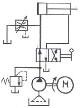
- 어큐물레이터 회로
- 시퀀스 회로
- 블리드 오프 회로
- 로킹 회로
(정답률: 알수없음)
72. 유압장치에서 실시하는 플러싱에 대한 설명으로 틀린 것은?
- 플러싱은 유압 시스템의 배관 계통과 시스템 구성에 사용되는 유압 기기의 이물질을 제거하는 작업이다.
- 플러싱 작업을 할 때 플러싱 유의 온도는 일반적인 유압시스템의 유압유 온도보다 낮은 20~30℃ 정도로 한다.
- 플러싱 작업은 유압기계를 처음 설치하였을 때, 유압작동유를 교환할 때, 오랫동안 사용하지 않던 설비의 운전을 다시 시작할 때, 부품의 분해 및 청소 후 재조립하였을 때 실시한다.
- 플러싱하는 방법은 플러싱 오일을 사용하는 방법과 산세정법 등이 있다.
(정답률: 알수없음)
73. 다음 실린더의 간략도에서 실린더 하우징의 내경이 100mm이고, 피스톤 로드의 직경이 50mm 이며, 오일구멍에서 나가는 오일 유량이 50L/mim이다. 피tm 톤이 우측으로 전진할 때 피스톤의 속도는 약 몇 m/s인가?
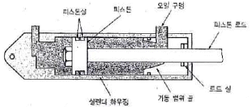
- 0.425
- 0.212
- 0.106
- 0.141
(정답률: 알수없음)
74. 유압 장치의 배관, 밸브, 계기류 등을 급격한 서지압으로부터 보호하기 위하여 설치하는 것으로 옳은 것은?
- 디퓨저
- 엑셀레이터
- 액추에이터
- 어큐물레이터
(정답률: 알수없음)
75. 압력 제어 밸브에서 어느 최소 유량에서 어느 최대 유량까지의 사이에 증대하는 압력을 무엇이라고 하나?
- 전량 압력
- 오버라이드 압력
- 정격 압력
- 서지 압력
(정답률: 알수없음)
76. 그림과 같이 P3의 압력은 실린더에 작용하는 부하의 크기 혹은 방향에 따라 달라질 수 있다. 그러나 중앙의 "A"에 특정 밸브를 연결하면 P3의 압력 변화에 대하여 밸브 내부에서 P2의 압력을 변화시켜 △P를 항상 일정하게 유지시킬 수 있는데 "A"에 들어갈 수 있는 밸브는 무엇인가?
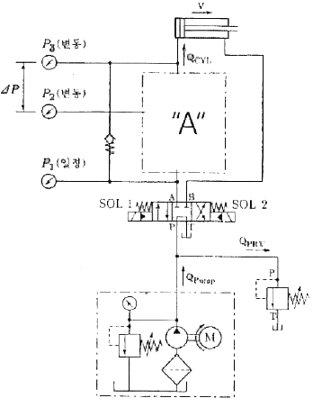
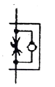
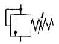
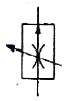
(정답률: 알수없음)
77. 다음 중 드레인 배출기 붙이 필터를 나타내는 공유압 기호는?
(정답률: 알수없음)
78. 두 개의 유입 관로의 압력에 관계없이 정해진 출구 유량이 유지되도록 합류하는 밸브의 명칭은?
- 집류 밸브
- 셔틀 밸브
- 적층 밸브
- 프리필 밸브
(정답률: 알수없음)
79. 그림과 같은 유압 회로도의 명칭으로 가장 적합한 것은?
- 미터 인 회로
- 카운터 밸런스 회로
- 미터 아웃 회로
- 시퀀스 밸브의 응용회로
(정답률: 알수없음)
80. 유압 시스템에서 비압축성 유체를 사용하기 때문에 얻어지는 가장 중요한 특성은?
- 과부하에 대한 안전성이 좋다.
- 운동방향의 전환이 용이하다.
- 정확한 위치 및 속도 제어가 가능하다.
- 무단 변속이 가능하다.
(정답률: 알수없음)
5과목: 건설기계일반 및 플랜트배관
81. 선재(線材)의 지름이나 판재의 두께를 측정하는 게이지는?
- 와이어 게이지(wire gauge)
- 나시 피치 게이지(screw pitch gauge)
- 반지름 게이지(radius gauge)
- 센터 게이지(center gauge)
(정답률: 알수없음)
82. 아크나 발생가스가 다 같이 용제 속에 잠겨 있어 잠호용접이라고 하며, 상품명으로 링컨용접이 해당하는 용접법은?
- TIG 용접
- 서브머지드 아크용접
- MIG 용접
- 일렉트로슬래그 용접
(정답률: 알수없음)
83. 프레스를 이용한 단조에서 유효 단조 면적이 150cm2, 가공재료의 변형저항이 20kgf/mm2, 기계효율을 80%로 하면 프레스의 용량(t)은?
- 30.0
- 300
- 37.5
- 375
(정답률: 알수없음)
84. 압연가공의 특징에 대한 설명으로 틀린 것은?
- 금속조직에서는 주조조직을 파괴하고 기포를 압착시켜 우수한 조직을 얻을 수 있다.
- 주조나 단조에 비하여 작업속도는 느리나 생산비가 저렴하여 대량생산에 적합하다.
- 금속의 압연은 작업 온도에 따라 열간 압연과 냉간 압연으로 구별한다.
- 냉간 압연 시 압연 방향으로 섬유 조직상이 발생하여 제품 조직에 방향성이 생긴다.
(정답률: 알수없음)
85. 강철을 CN 화합물을 주성분으로 하는 KCN, NaCN 과 융점을 강하시키고 유동성을 좋게 하는 KCI, NaCl 등을 첨가한 액중에 침지시키는 방법으로 표면을 경화하는 방법은?
- 피막법
- 청화법
- 질화법
- 화염법
(정답률: 알수없음)
86. 특수 가공법 중에서 기계적 에너지만 사용하는 가공법으로 짝지어진 것은?
- 전해가공, 전주가공, 초음파가공
- 롤러다듬질, 버니싱, 숏피닝
- 버니싱, 전주가공, 초음파가공
- 방전가공, 레이저가공, 이온가공
(정답률: 알수없음)
87. 지름이 50mm인 밀링커터를 사용하여 60m/min의 절삭속도로 절삭하는 경우 밀링커터의 회전수는 약 몇 rpm 인가?
- 224
- 382
- 468
- 820
(정답률: 알수없음)
88. 길이 300mm의 사인바로 29˚ 의 각도를 측정하였을 때 사인바 양단의 게이지블록 높이 차이는 약 몇 mm 인가?
- 138.79
- 127. 36
- 116.25
- 145.44
(정답률: 알수없음)
89. 절삭 가공 시 절삭유(cutting fluid)의 역할이 아닌것은?
- 공구와 칩의 친화력을 돕는다.
- 공구나 공작물의 냉각을 돕는다.
- 공작물의 표면조도 향상을 돕는다.
- 공작물과 공구의 마찰감소를 돕는다.
(정답률: 알수없음)
90. 다이캐스팅(die casting)의 일반적인 설명으로 틀린 것은?
- 결정립이 미세화하고 조직이 치밀하다.
- 다량생산에 적합하다.
- 치수의 정밀도가 높다.
- 주물에 사용되는 재료는 주로 회주철과 구상흑연주철이다.
(정답률: 알수없음)
91. 다음 중 로더의 전경각 및 후경각의 기준으로 옳은 것은?
- 전경각은 로더의 총중량이 4500kg을 초과하는 경우에는 40도 이상이어야 하고, 4500kg 이하인 경우는 30도 이상이어야 한다.
- 전경각은 로더의 총중량이 4500kg을 초과하는 경우에는 45도 이상이어야 하고, 4500kg 이하인 경우는 35도 이상이어야 한다.
- 후경각은 로더의 총중량이 4500kg을 초과하는 경우에는 40도 이상이어야 하고, 4500kg 이하인 경우는 30도 이상이어야 한다.
- 후경각은 로더의 총중량이 4500kg을 초과하는 경우에는 30도 이상이어야 하고, 4500kg 이하인 경우는 25도 이상이어야 한다.
(정답률: 알수없음)
92. 버킷 용량 0.6m3의 백호 1대를 사용하여 5700m3의 기초굴삭을 할 때 작업일수는 약 며칠인가? (단, 사이클타임 = 24s, 버킷계수 = 0.9, 토량환산계수 = 1.0, 작업효율 = 0.8, 1일 운전시간 = 8시간)
- 약 11.0일
- 약 15.4일
- 약 18.2일
- 약 20.4일
(정답률: 알수없음)
93. 대규모 항로 준설 등에 사용하는 것으로 선체 중앙에 진흙 창고를 설치하고 항해하면서 해저의 토사를 준설 펌프로 흡상하여 진흙 창고에 적재하는 방식의 준설선은?
- 그래브 준설선
- 드래그 셕션 준설선
- 디퍼 준설선
- 버킷 준설선
(정답률: 알수없음)
94. 노상 안정기의 규격은 다음 중 무엇으로 표시하는 가?
- 유제탱크의 용량(L)
- 배송 능력(kW)
- 추행차대의 길이(m)
- 자중(t)
(정답률: 알수없음)
95. 건설기계에서 무한궤도식(crawer type)과 차륜식(wheel type)을 비교할 때, 무한궤도식(crawler type)의 설명으로 옳은 것은?
- 토질(연약지반)의 영향을 많이 받는다.
- 경사 작업에 부적당하다.
- 기동성이 좋다.
- 견인 능력이 우수하다.
(정답률: 알수없음)
96. 일반적으로 기중기의 붐의 최소, 최대 제한각은 얼마인가?
- 최소 제한각 : 5° , 최대 제한각 58˚
- 최소 제한각 : 10° , 최대 제한각 68˚
- 최소 제한각 : 20° , 최대 제한각 78˚
- 최소 제한각 : 30° , 최대 제한각 88˚
(정답률: 50%)
97. 굴삭기의 상부 프레임 지지 장치의 종류가 아닌것은?
- 롤러(roller) 식
- 볼베어링(ball bearing) 식
- 솔리드(solid) 식
- 포스트(post) 식
(정답률: 40%)
98. 불도저의 진행 방향에 대하여 블레이드를 임의의 각도로 기울일 수 있으며, 신설도로 작업 시 한 허리의 흙을 낮은 곳으로 밀어내는 데 편리하도록 되어 있는 것은?
- 앵글 도저
- 레이크 도저
- U형 도저
- 트리밍 도저
(정답률: 알수없음)
99. 굴삭기의 작업 장치 중 유압 셔블(shovel)에 대한 설명으로 틀린 것은?
- 페이스 셔블(face shovel)이라고도 한다.
- 장비가 있는 지면보다 낮은 곳을 굴삭하기에 적합하다.
- 산악지역에서 토사, 암반 등을 굴삭하여 트럭에 싣기에 적합한 장치이다.
- 백호 버킷을 뒤집어 사용한 형상이다.
(정답률: 알수없음)
100. 36% Ni 성분을 지니는 Fe-Ni 합금으로 상온에서 열 팽창율이 탄소강의 약 1/10 에 불과하여 불변강에 해당하는 합금은?
- 쾌삭강
- 인바(Invar)
- 단조강
- 서멧(Cermet)
(정답률: 알수없음)
σ = P/A
여기서 A는 단면적이고, 직사각형 단면의 경우 A = bh이다. 따라서,
A = b(h-2e) = 3(4-2×1) = 6cm²
따라서,
σ = P/A = 1200/6 = 200 N/cm²
따라서 정답은 "200"이다.